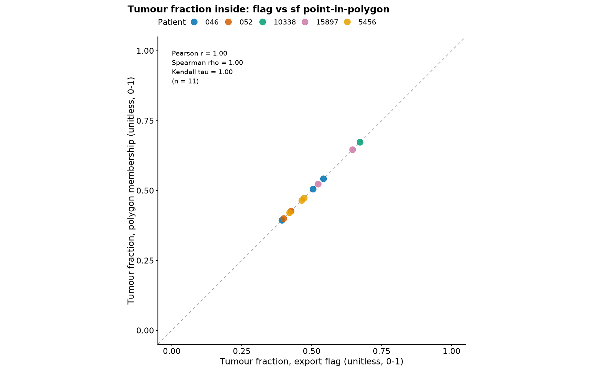

Last updated: 2026-08-12
Checks: 7 0
Knit directory: ihc_method/
This reproducible R Markdown analysis was created with workflowr (version 1.7.2). The Checks tab describes the reproducibility checks that were applied when the results were created. The Past versions tab lists the development history.
Great! Since the R Markdown file has been committed to the Git repository, you know the exact version of the code that produced these results.
Great job! The global environment was empty. Objects defined in the global environment can affect the analysis in your R Markdown file in unknown ways. For reproduciblity it’s best to always run the code in an empty environment.
The command set.seed(20260630) was run prior to running
the code in the R Markdown file. Setting a seed ensures that any results
that rely on randomness, e.g. subsampling or permutations, are
reproducible.
Great job! Recording the operating system, R version, and package versions is critical for reproducibility.
Nice! There were no cached chunks for this analysis, so you can be confident that you successfully produced the results during this run.
Great job! Using relative paths to the files within your workflowr project makes it easier to run your code on other machines.
Great! You are using Git for version control. Tracking code development and connecting the code version to the results is critical for reproducibility.
The results in this page were generated with repository version c5d0eaa. See the Past versions tab to see a history of the changes made to the R Markdown and HTML files.
Note that you need to be careful to ensure that all relevant files for
the analysis have been committed to Git prior to generating the results
(you can use wflow_publish or
wflow_git_commit). workflowr only checks the R Markdown
file, but you know if there are other scripts or data files that it
depends on. Below is the status of the Git repository when the results
were generated:
Ignored files:
Ignored: .RData
Ignored: .Rhistory
Ignored: .Rproj.user/
Ignored: data/
Ignored: output/figures/
Ignored: output/paired_deconv.rds
Ignored: renv/library/
Ignored: renv/staging/
Unstaged changes:
Modified: .gitignore
Modified: analysis/index.Rmd
Note that any generated files, e.g. HTML, png, CSS, etc., are not included in this status report because it is ok for generated content to have uncommitted changes.
These are the previous versions of the repository in which changes were
made to the R Markdown
(analysis/clinical_membership_qc.Rmd) and HTML
(docs/clinical_membership_qc.html) files. If you’ve
configured a remote Git repository (see ?wflow_git_remote),
click on the hyperlinks in the table below to view the files as they
were in that past version.
| File | Version | Author | Date | Message |
|---|---|---|---|---|
| html | c5d0eaa | sceriff0 | 2026-08-12 | Revert ":wrench: built the site" |
| html | 70924d7 | sceriff0 | 2026-08-12 | :wrench: built the site |
| Rmd | 360ee92 | bolt3x | 2026-08-12 | :recycle: reorganise the workflowr site into four ordered parts |
Every value below is derived from two inputs, compared per cell:
<patient>_<A|B|C>.csv — the all-slide
export’s per-region cell files under
data/all_slide/csv/<patient>/, one row per cell,
carrying both the cell centroid and the
exporter’s precomputed Out_of_annotation flag for the same
cells. That both live in one file is what makes this a per-cell
comparison rather than a cross-file match.ANNOTATION_k, in pixels), under
data/all_slide/annotation/<patient>/, loaded via
load_annotations() for the patients in
neoplastic_data$SAMPLE.Region A is ANNOTATION_1, B is
ANNOTATION_2, by alphabet position — the same parser keys
the csvs and the geojsons, which is what guarantees a cell file and the
polygon it is compared against refer to the same region.
The main pipeline decides “inside the annotation” by sf
point-in-polygon on the pathologist geojson, mapping cell
centroids into the pixel frame with the fixed
centroid / 0.325. This report cross-checks that against the
shipped Out_of_annotation flag. Because the region csv
carries both the centroid and the flag for the same
cells, agreement is a direct per-cell comparison (no cross-file
matching):
flag inside = Out_of_annotation is FALSE
sf inside = st_within( centroid / 0.325 , the ANNOTATION_k geojson polygon )Per (patient, annotation) we report the two set sizes,
their overlap (Jaccard and % of cells that agree), and the resulting
tumour fraction under each method. A large flag-vs-sf gap on a slide
means the fixed 0.325 conversion is wrong for that
slide — sf is landing on the wrong cells.
# The region csvs and the polygons come from the same export tree, so REGION_CSV_DIR()
# and load_annotations() default to the two halves of it. Both fall back to the older
# flat layout if the nested one is absent.
REGION_DIR <- REGION_CSV_DIR()
annots <- load_annotations(patient_ids = neoplastic_data$SAMPLE)
if (is.null(annots)) {
qc <- tibble::tibble()
cat("No annotation polygons found — nothing to compare the flag against.\n")
} else {
qc <- annotation_membership_qc(REGION_DIR, annots, um_per_px = 0.325)
if (nrow(qc) == 0) cat("No region csvs found under", REGION_DIR, "\n")
}
if (nrow(qc)) {
cat("annotations checked:", nrow(qc),
"| mean cell-level agreement:",
sprintf("%.1f%%", 100 * mean(qc$pct_cells_agree, na.rm = TRUE)),
"| mean Jaccard:", sprintf("%.2f", mean(qc$jaccard, na.rm = TRUE)), "\n")
}annotations checked: 12 | mean cell-level agreement: 100.0% | mean Jaccard: 1.00 pct_cells_agree = fraction of cells given the same
inside/outside call by both methods. jaccard = |flag ∩ sf|
/ |flag ∪ sf| of the inside sets. The last two columns are the
tumour-fraction-inside each method would feed into the concordance plots
— they should be close if membership agrees.
if (nrow(qc)) {
qc |>
mutate(across(c(jaccard, pct_cells_agree, tumor_frac_flag, tumor_frac_sf),
~ round(.x, 3))) |>
arrange(jaccard) |>
knitr::kable(caption = paste("sf vs Out_of_annotation flag, per annotation.",
"Low jaccard / pct_cells_agree = the /0.325 sf",
"disagrees with the flag on that slide."))
}| patient_id | annotation | n_cells | n_flag_inside | n_sf_inside | n_both | jaccard | pct_cells_agree | tumor_frac_flag | tumor_frac_sf | note |
|---|---|---|---|---|---|---|---|---|---|---|
| 046 | ANNOTATION_1 | 405697 | 193483 | 193483 | 193483 | 1 | 1 | 0.394 | 0.394 | NA |
| 046 | ANNOTATION_2 | 405697 | 87199 | 87199 | 87199 | 1 | 1 | 0.542 | 0.542 | NA |
| 046 | ANNOTATION_3 | 405697 | 41505 | 41505 | 41505 | 1 | 1 | 0.505 | 0.505 | NA |
| 052 | ANNOTATION_1 | 378194 | 176971 | 176970 | 176970 | 1 | 1 | 0.400 | 0.400 | NA |
| 052 | ANNOTATION_2 | 378194 | 110119 | 110119 | 110119 | 1 | 1 | 0.426 | 0.426 | NA |
| 10338 | ANNOTATION_1 | 235328 | 118741 | 118741 | 118741 | 1 | 1 | 0.673 | 0.673 | NA |
| 15897 | ANNOTATION_1 | 202652 | 43817 | 43817 | 43817 | 1 | 1 | 0.523 | 0.523 | NA |
| 15897 | ANNOTATION_2 | 202652 | 145642 | 145642 | 145642 | 1 | 1 | 0.646 | 0.646 | NA |
| 5456 | ANNOTATION_1 | 382799 | 88131 | 88131 | 88131 | 1 | 1 | 0.465 | 0.465 | NA |
| 5456 | ANNOTATION_2 | 382799 | 82059 | 82059 | 82059 | 1 | 1 | 0.473 | 0.473 | NA |
| 5456 | ANNOTATION_3 | 382799 | 89266 | 89266 | 89266 | 1 | 1 | 0.421 | 0.421 | NA |
| 24086 | ANNOTATION_1 | 283631 | NA | NA | NA | NA | NA | NA | NA | no matching geojson |
Each point is one annotation; the dashed line is perfect agreement. Points off the line are annotations where the two membership definitions give a different tumour fraction — those are the slides to distrust the sf conversion on.
if (nrow(qc) && sum(is.finite(qc$tumor_frac_flag) & is.finite(qc$tumor_frac_sf)) > 1) {
d <- qc |> filter(is.finite(tumor_frac_flag), is.finite(tumor_frac_sf))
cc <- paired_cor3(d$tumor_frac_flag, d$tumor_frac_sf) # Pearson + Spearman + Kendall
ggplot(d, aes(tumor_frac_flag, tumor_frac_sf, colour = patient_id)) +
geom_abline(slope = 1, linetype = "dashed", colour = REF_LINE) +
geom_point(size = 3, alpha = 0.85) +
coord_equal(xlim = c(0, 1), ylim = c(0, 1)) +
annotate("text", x = 0, y = 1, hjust = 0, vjust = 1,
label = sprintf("Pearson r = %.2f\nSpearman rho = %.2f\nKendall tau = %.2f\n(n = %d)",
cc$pearson, cc$spearman, cc$kendall, cc$n)) +
labs(title = "Tumour fraction inside: flag vs sf point-in-polygon",
x = "tumour fraction (Out_of_annotation flag)",
y = "tumour fraction (sf / 0.325)", colour = "patient")
}
note column flags the ones
skipped (missing geojson or columns).0.325
conversion for those slides; a slide with low agreement should either be
excluded or given its own conversion.clinical_flowpath.Rmd.
sessionInfo()R version 4.3.2 (2023-10-31)
Platform: x86_64-pc-linux-gnu (64-bit)
Running under: Rocky Linux 9.5 (Blue Onyx)
Matrix products: default
BLAS/LAPACK: FlexiBLAS OPENBLAS; LAPACK version 3.11.0
locale:
[1] LC_CTYPE=C.UTF-8 LC_NUMERIC=C LC_TIME=C.UTF-8
[4] LC_COLLATE=C.UTF-8 LC_MONETARY=C.UTF-8 LC_MESSAGES=C.UTF-8
[7] LC_PAPER=C.UTF-8 LC_NAME=C LC_ADDRESS=C
[10] LC_TELEPHONE=C LC_MEASUREMENT=C.UTF-8 LC_IDENTIFICATION=C
time zone: Europe/Rome
tzcode source: system (glibc)
attached base packages:
[1] stats4 stats graphics grDevices datasets utils methods
[8] base
other attached packages:
[1] data.table_1.18.4 fs_2.1.0
[3] readxl_1.5.0 DESeq2_1.42.1
[5] SummarizedExperiment_1.32.0 Biobase_2.62.0
[7] MatrixGenerics_1.14.0 matrixStats_1.5.0
[9] GenomicRanges_1.54.1 GenomeInfoDb_1.38.8
[11] IRanges_2.36.0 S4Vectors_0.40.2
[13] BiocGenerics_0.48.1 sf_1.1-1
[15] here_1.0.2 lubridate_1.9.5
[17] forcats_1.0.1 stringr_1.6.0
[19] dplyr_1.2.1 purrr_1.2.2
[21] readr_2.2.0 tidyr_1.3.2
[23] tibble_3.3.1 ggplot2_4.0.3
[25] tidyverse_2.0.0 workflowr_1.7.2
loaded via a namespace (and not attached):
[1] tidyselect_1.2.1 farver_2.1.2 S7_0.2.2
[4] bitops_1.0-9 fastmap_1.2.0 RCurl_1.98-1.19
[7] promises_1.5.0 digest_0.6.39 timechange_0.4.0
[10] lifecycle_1.0.5 processx_3.9.0 magrittr_2.0.5
[13] compiler_4.3.2 rlang_1.2.0 sass_0.4.10
[16] tools_4.3.2 yaml_2.3.12 knitr_1.51
[19] labeling_0.4.3 S4Arrays_1.2.1 classInt_0.4-11
[22] DelayedArray_0.28.0 RColorBrewer_1.1-3 BiocParallel_1.36.0
[25] abind_1.4-8 KernSmooth_2.23-26 withr_3.0.3
[28] grid_4.3.2 git2r_0.33.0 e1071_1.7-17
[31] scales_1.4.0 cli_3.6.6 rmarkdown_2.31
[34] crayon_1.5.3 generics_0.1.4 otel_0.2.0
[37] rstudioapi_0.15.0 httr_1.4.7 tzdb_0.5.0
[40] DBI_1.3.0 cachem_1.1.0 proxy_0.4-29
[43] zlibbioc_1.48.2 parallel_4.3.2 cellranger_1.1.0
[46] XVector_0.42.0 vctrs_0.7.3 Matrix_1.6-5
[49] jsonlite_2.0.0 callr_3.7.6 hms_1.1.4
[52] locfit_1.5-9.12 jquerylib_0.1.4 units_1.0-1
[55] glue_1.8.1 codetools_0.2-20 ps_1.9.3
[58] stringi_1.8.7 gtable_0.3.6 later_1.4.8
[61] pillar_1.11.1 htmltools_0.5.9 GenomeInfoDbData_1.2.11
[64] R6_2.6.1 rprojroot_2.1.1 evaluate_1.0.5
[67] lattice_0.22-9 renv_1.2.3 httpuv_1.6.12
[70] bslib_0.9.0 class_7.3-23 Rcpp_1.1.1-1.1
[73] SparseArray_1.2.4 whisker_0.4.1 xfun_0.58
[76] getPass_0.2-4 pkgconfig_2.0.3